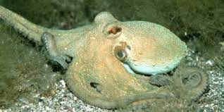

When this website was published, it was september also known as Hispanic Heiratige Month. To honor this, I am going to include an octopus that is native to Mexico, The Octopus Maya.
This octopus is also knwon as the Mexican Four Eyed Octopus, because it has double ringed false eye spots, which is why people think that it has four eyes henceforth the name. This is a shallow water octopus that is found in the tropical Western Atlantic Ocean. Unlike most other species, the females of this species grow larger than the males. The females grow up to 124mm and weigh 1024 grams where the males up to 91mm long and 282 grams.